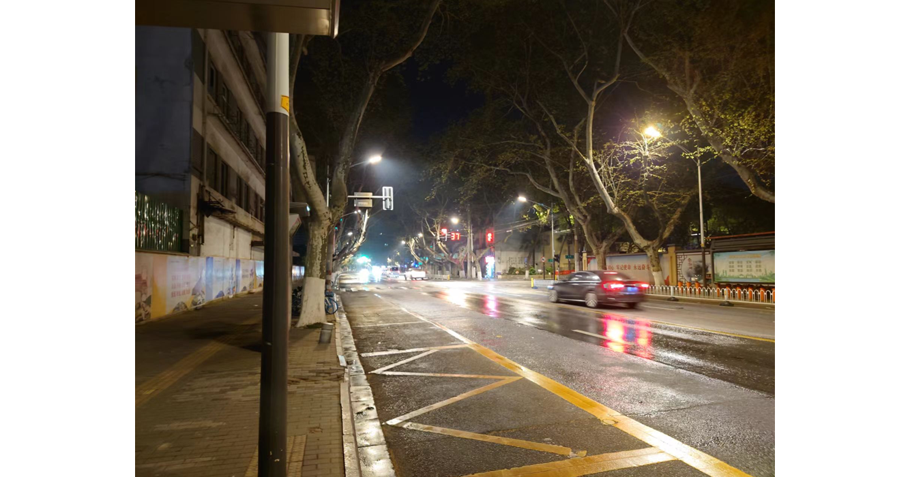

不知道今天自己的心情该不该被记录下来。
想写点东西，但是觉得实在是没有必要。这份记忆留在哪里就好了，可能一觉醒来就忘了。
最近时常被各种各样尖锐的言语和行为刺激，有意无意。虽然我平时没什么爱好，也没什么生气，更没什么交际，也没什么回响。只是我实在是难以负担这种情绪，也难以处理这种状态，只能莫名其妙因为这种莫名其妙的事情动肝火，而一次又一次地被拖入无理的低气压中。
这属于自我膨胀和自我厌恶莫名其妙叠加出来的神奇心情。
客观世界发生了点莫名其妙的事情，赛博输出了一波之后需要安慰无辜连累的伙伴，补偿地送了人家 200 块钱咖啡礼品卡。各种各种。生活向来喜欢不讲道理的玩笑，不知为何这个月的我三番五次陷入同样的境遇，我实在是没有办法对此视而不见。无论我是否身处聒噪无理油焖死气沉沉的那个地方，它的影响始终阴魂不散。过去的我一定不会想到今天的我是如此想要逃避。但是我时常在想，什么时「拉黑」成了保护我的唯一手段了？恰巧谈到村上春树和世界系作品的联系，那份「轮回的努力终究是无用」的总结让我感叹到现在，实在是有点奇妙。
交流是环境复杂的。尤其是情绪不仅有一个象限的维度能够承载，其间万千实难概括，外力影响也不是能够受控避免的因素。我最近时常被各种各样的言语行为刺激可能是最重要的原因，有意无意间便敏感起来。但最重要的原因还是「我没有我所想象的那么坚强」，我难以负担这种情绪，也难以处理这种状态，一些简单的刺激便可以伤害到不稳定的我，这是我个人的问题。
强烈的情绪时常让我惶恐，因为很容易失去判断力。
说实话，我其实不太知道这份情绪是否正确。我是不擅长交流的人，现实世界的我远没有赛博空间那样健谈，加之近来我也很少动笔写些东西，导致笔尖钝感日益明显。生活需要处处留心，日常向来不遂人愿，但是与人交往依旧需要真心。这绝对不是能肆意妄为的场合，但当大家都保持距离他却依然故我，这着实需要勇气。
与人交往的距离也是我需要学习的命题。当我满怀着对世界的善意开始一段交流的时候，总归还是希望投下的那束光是世界的善意，而不是别的什么东西，而这份过往让我有些神经过敏。我又是个相当在意他人感受的人，时常担心这份选择是否会影响到别人，当然也会在意他人是否会有伤害我的倾向。这世界总喜欢开些不合逻辑的玩笑，越是如此希望越是事与愿违，虽不至于暗自神伤但是我着实还是会遗憾的。
今天的我尤其容易受伤害。
「人本来就都很讨厌，所有人都是。」有些人和事，看见了就烦心。我始终学不会这个教训。
「说不定那时我们是为相遇而相遇。纵令那时未能相遇，也会在别的地方相遇。」带着这份因缘际会的灵光，我才来到了这篇场域。这里相当程度上回应了我的期待，但是其实您也确实发现了，有时候即使采取了看似相当过激的情绪表达，相当程度上并不会如何影响大环境的起伏，而离开这个选择本身反倒是我付出了损失，毕竟对方什么都没有失去。
或许一切的一切都存在着 Misdirection。但是没关系，我持续性地对这样的人、事、物有着 Pride & Prejudice。我难以容忍，更难以顺水推舟一损俱损。但是这何尝不是在骂自己？毕竟它们啥惩罚都不会有，自顾自在乐呵乐呵，我情绪坏了友情飘了钱也没了。但是他们却没有任何损失，损失却全在我身上。我失去了自己的时间，失去了自我的空间，失去了自尊的视线，也难以料想这么多以此为底盘根错节而生的关系，树确实不知道会结什么果子。
或许诚如所言，有些事情确实是不必那么较真。问题兴许不是很大，就当是回响吧。
或许是这样。
我要比自己所希望的更坚强一些。
不知道今天自己的心情该不该被记录下来。这份记忆留在哪里就好了，可能一觉醒来就忘了。毕竟有太多的人不需要这个 Switch 就能泰然。但这份「泰然」有着截然不同的语境，我当然希望自己朝着好的那个方向去走着。当然更重要的，一定不要无防备地出现在任何场合，情绪上的那份 Shock 不知什么时候就会到来，那时候需要做好准备。
我向来容易因为可能是我的原因有些自责和意难平。
今天又学到了点东西，这可能比好心情更重要些。当我什么都没说吧。这生活挺好的，至少这风吹着挺舒服。是我最喜欢的天气。
歌单随机切到「Orange」，四月谎的 ED。泪快止不住了。
但是明天就快到了。